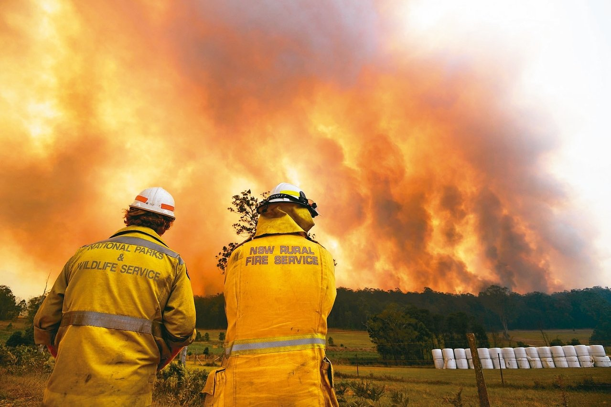

聯合晚報 編譯季晶晶／綜合報導
澳洲森林大火延燒，已發布災難級（catastrophic）危險警示，13日證實有第四人喪生。專家說，情況可能發展成最危險的野火型態：火風暴。
這種野火火勢很大而且移動速度快，甚至可以自己生成類似雷暴（thunderstorm）的天氣系統。
英國廣播公司（BBC）報導，特定的地面和大氣條件下，森林野火可能肆虐大範圍的土地，能量大到能在火場上空形成風暴。這就是火積雲（pyrocumulonimbus）。
通常，野火會隨風移動，但大火攜有巨大能量，煙不會被風吹得往橫向擴散，而是形成最高可升至15公里高的煙柱。
煙柱裡含有熱和濕氣，遇到平流層後會冷凝並形成雲。
新南威爾斯大學研究極端大火的專家夏普雷斯說：「火風暴基本上是在煙柱裡的風暴。」
火風暴形成後，下方的火勢必然又大又危險，根據新南威爾斯大學氣候科學家伊凡斯，會「足以壓制任何其他氣象條件」。
因為具有風暴的特性----狂風可將餘燼吹到四面八方。有時候還挾帶閃電，引發更多火災----森林大火將愈發危險。
伊凡斯表示，儘管這種出現閃電的風暴沒有雨，但會吸進更多餘燼並投擲到火場範圍以外遠處，所以「火勢會跳躍推進」。
這讓大火難以捉摸和撲滅，能朝多方向發展。
